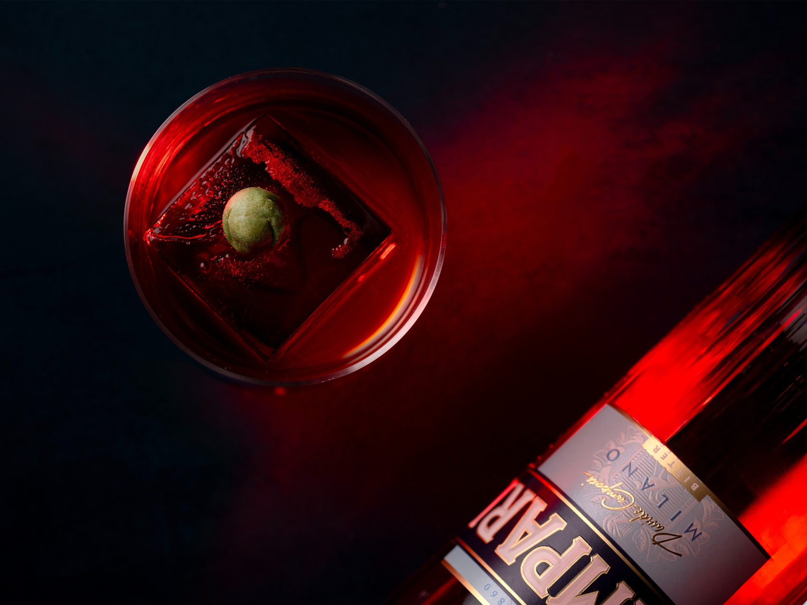
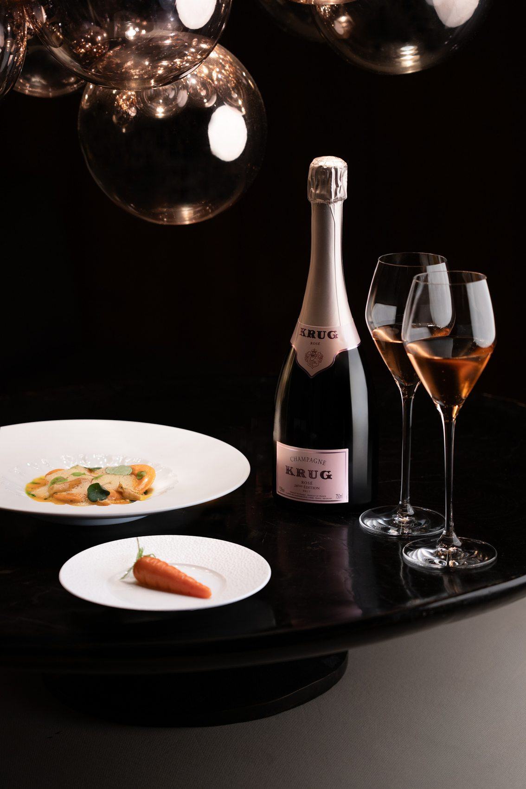
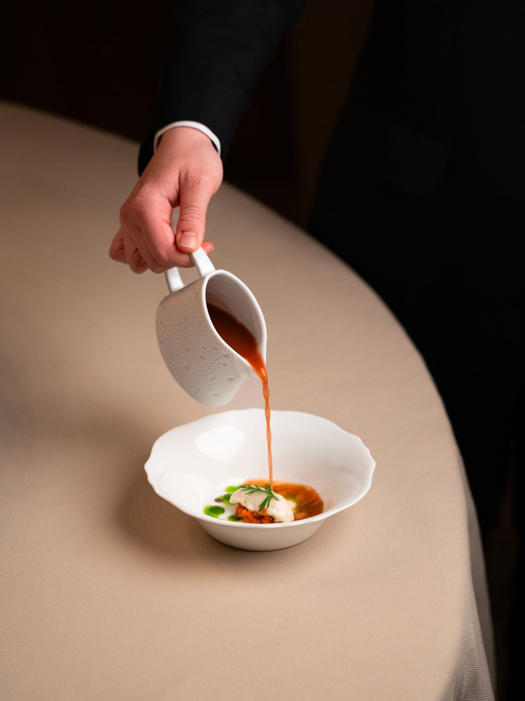
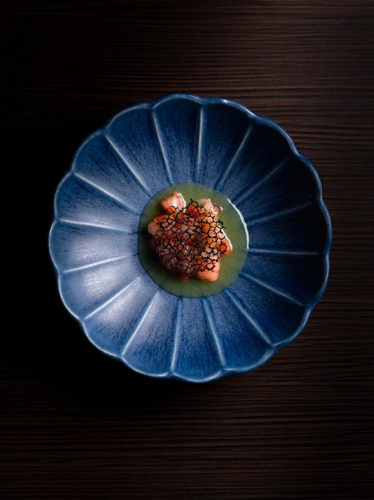
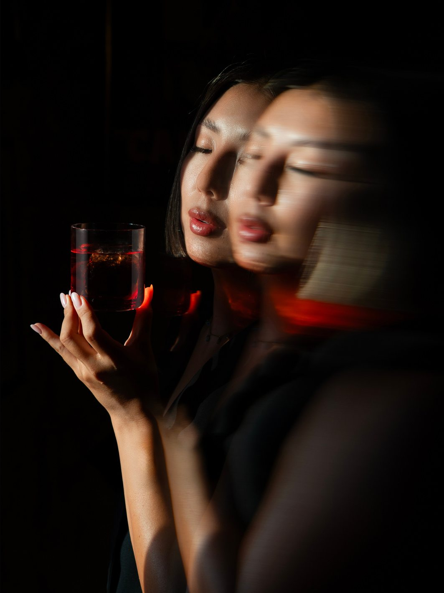
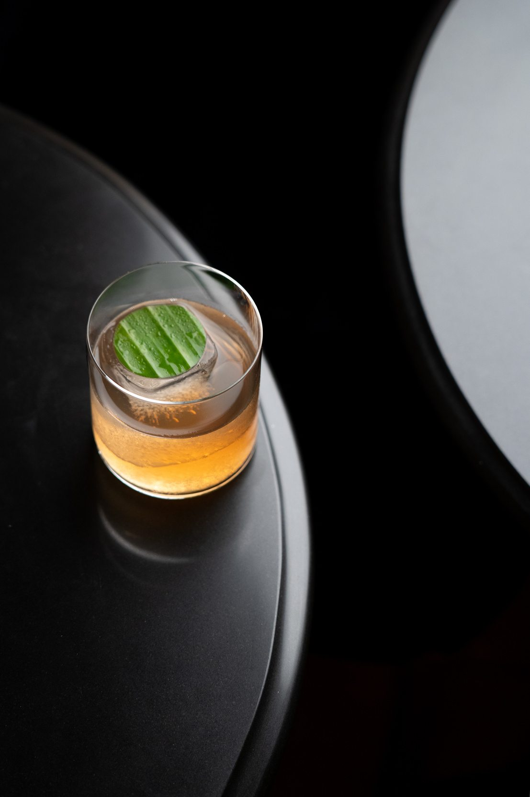
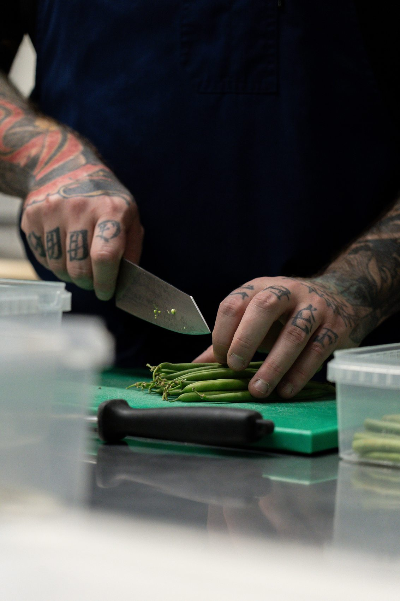
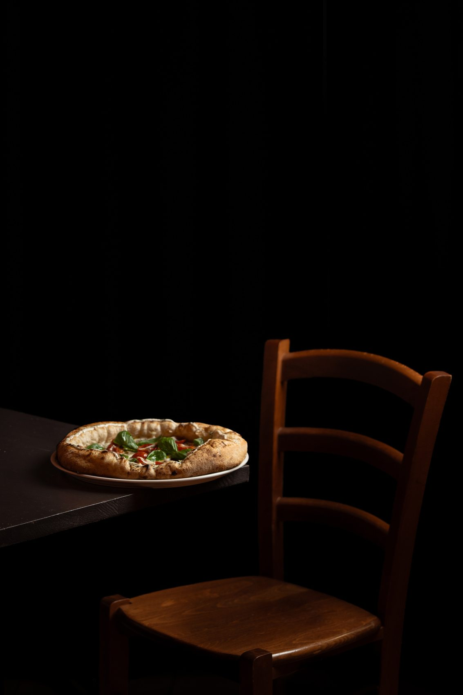
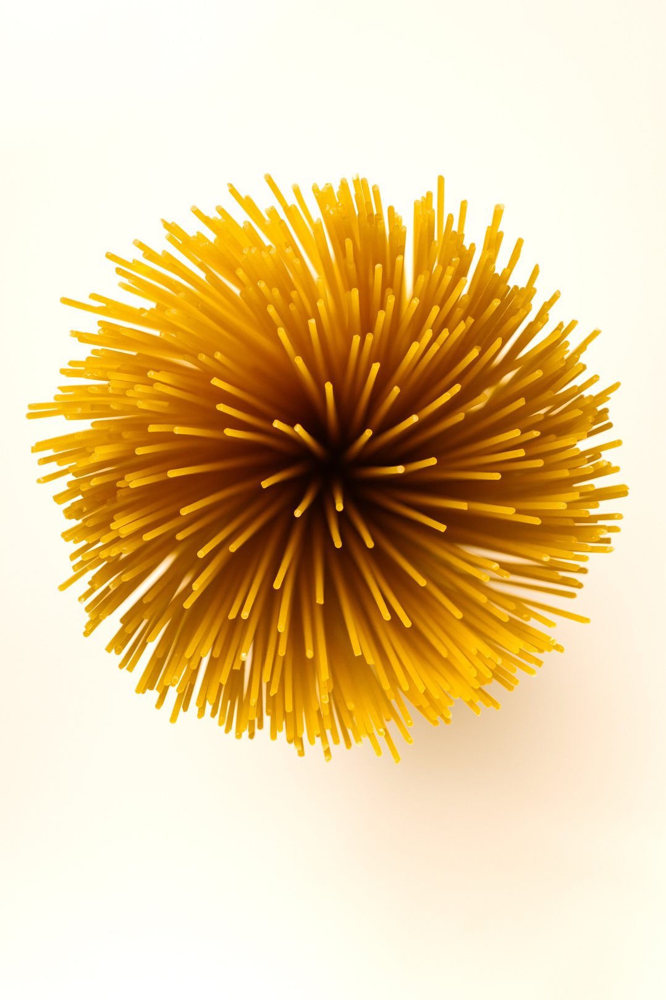

RobertoSatta.

Cinematic photography for fine dining, cocktail bars and luxury hospitality. Every image is built around the identity of the place.
- Geranium · Krug · Fuoco Sacro · Cecconi's
- Shortlisted · World Food Photography Awards 2025 & 2026
- Founder · Sardinia Cocktail Week
- Italy · Germany · UK · Denmark
Selected
projects
Visual storytelling shot on location, adapted to each kitchen, bar and culinary culture.
Geranium
Copenhagen · 3 Michelin stars. Fine-dining beverage photography inside Geranium's environment: signature juices and contemporary chiaroscuro. Concept and juices by Giulia Caffiero.


Krug × Fuoco Sacro
Sardinia · 1 Michelin star. Editorial photography for Krug, created at Fuoco Sacro.


Slurp
Copenhagen. Natural-light food photography for Nordic casual fine dining, from the noodle machine to the bowl.


Work
Texture, mood and identity. Natural light where the place gives it, controlled light where the story needs it.











Selected
collaborations
Michelin kitchens, champagne houses, luxury resorts and the bars that shape a city's night.
Fine dining & Michelin
Hospitality & luxury
International projects
Bars & mixology
Food & casual dining
Special projects

I'm
Roberto
Before becoming a full-time photographer, I spent years working inside restaurants, bars and hotels. I understand the rhythm of a kitchen, the discipline behind every dish and the silence before service, so I work quickly and quietly around your team.
My style blends natural and artificial light, raw elegance and a strong sense of place. From Michelin-level kitchens to creative street food concepts, I build visual identities that connect venues and brands to their audience. I'm based in Sardinia and I travel for commissions across Europe and worldwide.
- Fine dining & gastronomy
- Cocktail & mixology
- Hotels & luxury hospitality
- Restaurant & kitchen reportage
- F&B product & still life
- Openings & rebrandings
- Art direction & styling
- Editorial & social campaigns
Let's talk.
If you're looking for a visual identity that elevates your brand through atmosphere, storytelling and refined food imagery, I'd be happy to collaborate.